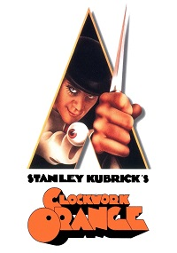
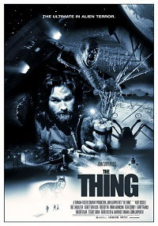
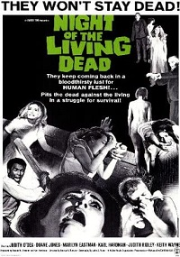
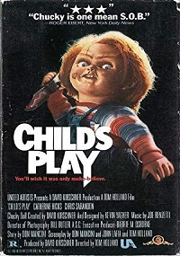
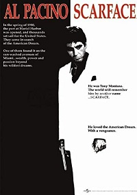
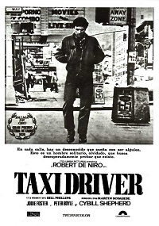
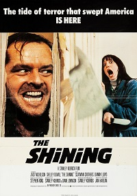

A CLOCKWORK
ORANGE
Estado de bienestar futurista, Alex (MalcolmMcDowell),un joven
despiadado, duerme todo el día y pasa las noches vagando por la ciudad con sus droogs (amigos), atacando a
personas inocentes en las calles y en sus hogares.
Finalmente, capturado por la policía, Alex sufre una rehabilitación en forma de terapia de aversión tan
brutal y horripilante como cualquiera de sus delitos.
REPARTO: Malcom McDowell, Patrick Magee, Adrianne Corri.
DIRECCIÓN: Stanley Kubrick.
Crimen - 1971 - 2h 17min.

STAR WARS:
RETURN OF THE JEDI EPISODE VI
Luke Skywalker y la princesa Leia deben viajar a Tatooine para liberar
a Han Solo. Para conseguirlo, deben infiltrarse en la peligrosa guarida de Jabba the Hutt, el gángster más
temido de la galaxia. Una vez reunidos, el equipo recluta a tribus de Ewoks para combatir a las fuerzas
imperiales en los bosques de la luna de Endor.
REPARTO: Mark Hamill,Carrie Fisher,Harrison Ford.
DIRECCIÓN: Richard Marquand.
Ciencia Ficción/Acción - 1983 - 2h 16min.

THE THING
En una estación experimental remota de la Antártida, un equipo de
científicos de investigación estadounidenses ven cómo en su campamento base un helicóptero noruego dispara
contra un perro de trineo. Cuando acogen al perro, éste ataca brutalmente tanto a los seres humanos como a
los caninos del campamento, y descubren que la bestia, de origen desconocido, puede asumir la forma de sus
víctimas.
REPARTO: Kurt Russell, Wilford Brimley, Keith David.
DIRECCIÓN: John Carpenter.
Terror - 1983 - 1h 5min.

NIGHT OF THE
LIVING DEAD
En un cementerio de Pennsylvania, Barbara (Judith O'Dea) es atacada por
un muerto viviente. Aterrorizada, la joven huye hacia una granja, donde también se ha refugiado Ben (Duane
Jones). Juntos intentarán sobrevivir en el interior de esa aislada granja.
REPARTO: Duane Jones, Judith O'Dea y Karl Hardman.
DIRECCIÓN: George A. Romero.
Terror - 1970 - 1h 36min.

CHILD´S PLAY
Después de mudarse a una ciudad nueva, Karen le regala a su hijo Andy
un muñeco que se convierte en el mejor amigo del niño. Lo que ellos desconocían es que el muñeco es un ser
maligno que tiene vida propia. Andy deberá aliarse con otros niños vecinos para detener a esta diabólica
criatura.
REPARTO: Devon Sawa, Zackary Arthur, Alyvia Alyn Lind.
DIRECCIÓN: Don Mancini.
Terror - 1988 - 1h 27min.

SCARFACE
Tony Montana es un emigrante cubano frío e implacable que se instala en
Miami con el propósito de convertirse en un gángster importante. Con la colaboración de su amigo Manny
Rivera inicia una fulgurante carrera delictiva, con el objetivo de acceder a la cúpula de una organización
de narcos.
REPARTO: Al Pacino,Steven Bauer, Michelle Pfeiffer.
DIRECCIÓN: Brian De Palma.
Drama/Crimen - 1983 - 1h 63min.

TAXI DRIVER
Ambientada en la Nueva York de la década de 1970, poco después de que
terminara la guerra de Vietnam, se centra en la vida de Travis Bickle, un excombatiente solitario e
inestable que debido a su insomnio crónico comienza a trabajar como taxista, se incorpora a la turbia vida
nocturna de la ciudad.
REPARTO: Robert De Niro, Cybill Shepherd, Jodie Foster.
DIRECCIÓN: Martin Scorsese.
Drama/Crimen - 1976 - 1h 13min.

THE
SHINING
Jack Torrance(Jack Nicholson) se traslada junto a su mujer y a su
introvertido hijo Danny a un impresionante hotel ubicado en Colorado del que ha de encargarse los
larguísimos y solitarios meses de invierno. En el hotel comienzan a sucederse fenómenos paranormales que
provocarán serios trastornos en la mente de Jack.
REPARTO: Jack Nicholson, Shelley Duvall, Danny Lloyd.
DIRECCIÓN: Stanley Kubrick.
Drama/Terror - 1980 - 1h 46min.